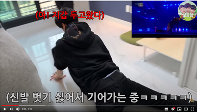

서론에서 언급한 ‘깡 챌린지’는 요즘 유행하는 챌린지 문화의 한 예시이다. 챌린지 문화는 영상공유를 기반으로 한 새로운 세대의 놀이 문화이다. 또 다른 대표적인 예시로 지코의 ‘아무노래 챌린지’를 들 수 있다. <아무노래>라는 곡도 차트 1위를 오래 유지했을 정도로 인기를 끌었고, 이 흥행에는 곡의 안무를 따라하여 SNS에 업로드하는 아무노래 챌린지가 유행한 점이 큰 영향을 주었다. 다만 깡 챌린지는 아무노래 챌린지보다 2차 창작적 요소가 더 크다. 깡 챌린지는 생산자의 의도와 상관없이 대중이 자발적으로 만들어냈다는 점 때문이다. 아무노래 챌린지는 지코가 직접 인스타그램을 통해 안무를 업로드함으로써 본인이 챌린지를 시작하였다. 하지만 깡 챌린지는 ‘호박전시현’ 유튜브 채널에서 안무를 패러디한 영상을 올림으로써 시작되었다.
깡 챌린지 영상들의 특징은 자신이 중요하다고 생각하는 부분이 각자 다르고 이를 부각하는 방식 또한 다르다는 점이다. 곡의 마지막에 등장하는 무릎을 끌며 바닥을 기는 춤을 중요하게 생각하더라도 어떤 사람은 이를 지갑을 놓고 와서 가지고 와야 하는 상황처럼 묘사하기도 하며,
또다른 사람은 무릎 밑에 걸레를 놓고 바닥을 청소하는 행동으로 표현하기도 한다.